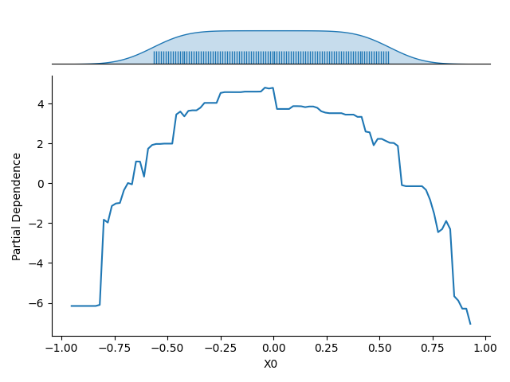

Note
Go to the end to download the full example code.
Visualization with Partial Dependency Plots#
This example demonstrates how to create Partial Dependency Plots (PDPs). This visualization method allows you to examine a model’s dependence on a single feature or a pair of features. The underlying implementation is built upon sklearn.inspection.partial_dependence, which calculates the dependence by taking the average response of an estimator across all possible values of the target feature(s). We’ll use the circles dataset to illustrate the basic usage.
Loading the circles dataset#
We start by sampling a synthetic dataset using the make_circles function from sklearn.datasets.
import matplotlib.pyplot as plt
import numpy as np
import seaborn as sns
from sklearn.datasets import make_circles
X, y = make_circles(n_samples=500, noise=0.1, factor=0.7, random_state=0)
# Visualizing the dataset
_, ax = plt.subplots()
sns.scatterplot(x=X[:, 0], y=X[:, 1], hue=y, ax=ax)
ax.set_xlabel("X0")
ax.set_ylabel("X1")
sns.despine(ax=ax)
c1 = plt.Circle((0, 0), 0.85, color="k", ls="--", fill=False, label="class boundary")
ax.add_patch(c1)
_ = ax.legend(loc="upper right")
Training a classifier#
Next, we train a model to solve the binary classification task presented by the non-linearly separable circles dataset. For this example, we’ll use a gradient boosted tree ensemble, specifically the HistGradientBoostingClassifier from scikit-learn.
from sklearn.ensemble import HistGradientBoostingClassifier
from sklearn.metrics import roc_auc_score
from sklearn.model_selection import train_test_split
X_train, X_test, y_train, y_test = train_test_split(X, y, test_size=0.3, random_state=0)
model = HistGradientBoostingClassifier(random_state=0)
model.fit(X_train, y_train)
y_pred = model.predict_proba(X_test)
auc = roc_auc_score(y_true=y_test, y_score=y_pred[:, 1])
print(f"ROC AUC on the test set: {auc:.2f}")
ROC AUC on the test set: 0.97
Partial Dependence for an Individual Feature#
Once the model is fitted, we use the Partial Dependency Plot (PDP) to visualize its dependence on a single input feature (e.g., the first feature, \(X_0\)).The resulting plot shows the average response of the model (on the :math`y`-axis) for each possible value of the selected feature (on the \(x\)-axis), with the averaging performed over all other features in the dataset.
The plot also includes the marginal distribution of the feature considered along the \(x\)-axis. This feature distribution is essential for identifying low-density regions in the data. Model predictions and the estimated partial dependence can be less reliable or extrapolated in these regions.
Partial Dependence on a Pair of Features#
We can similarly visualize the dependence of the model on a pair of features (e.g., \(X_0\) and \(X_1\)). Here, the partial dependence is encoded by contour lines (level lines) across the 2D plot. The marginal distribution for each feature is also represented along the axes to help identify regions where the estimated dependence might be unreliable due to a low density of training data.
Total running time of the script: (0 minutes 1.757 seconds)
Estimated memory usage: 229 MB